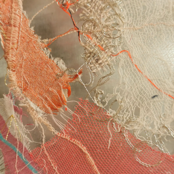
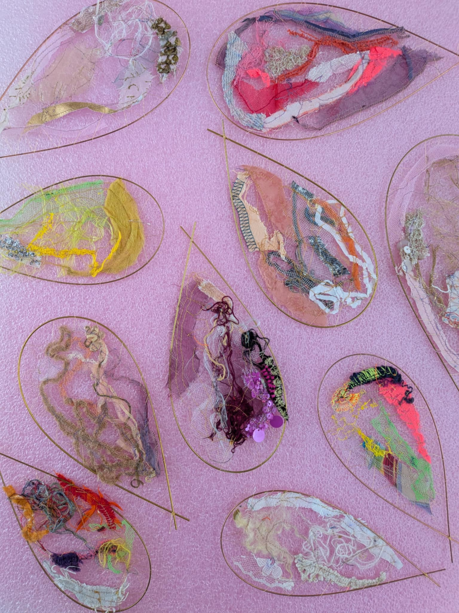
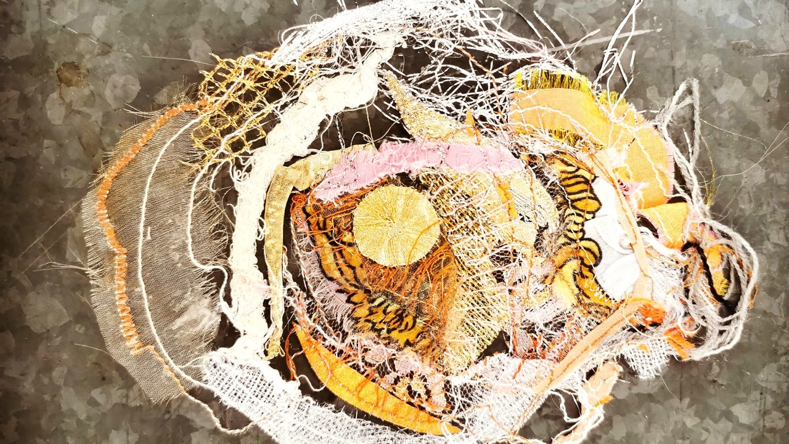
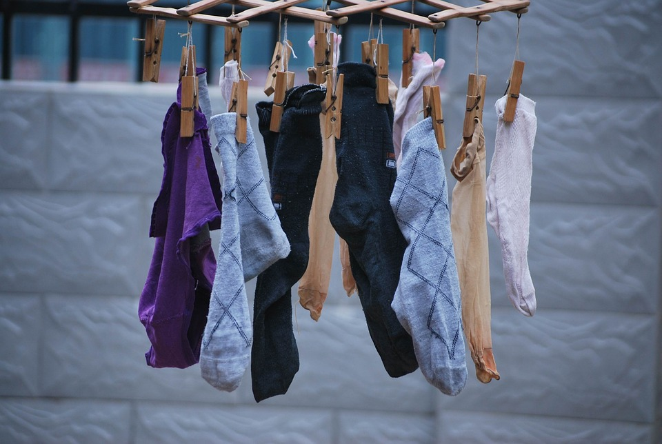
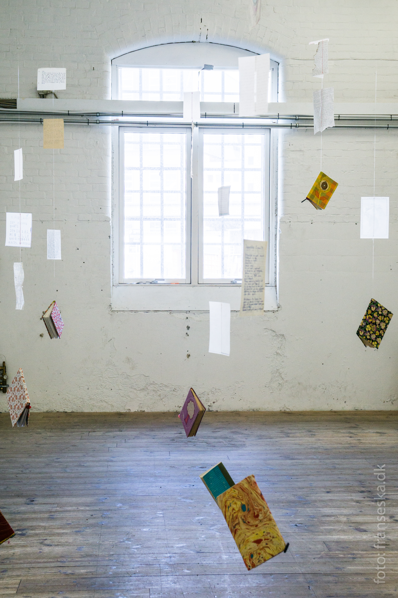
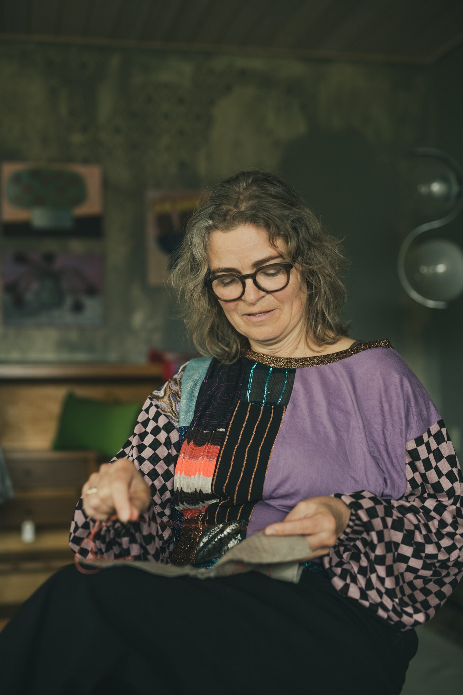
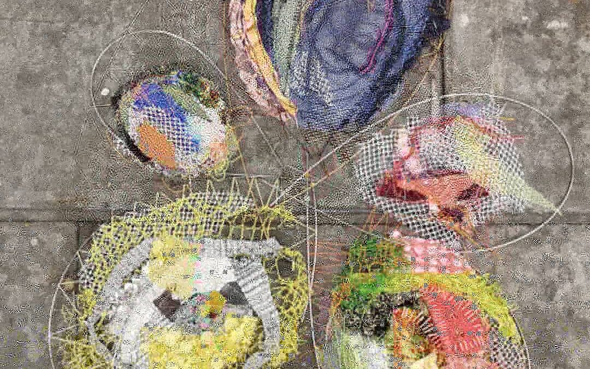

Det sanselige dybe kunst-hvil
Tanker om kunst, sansning og Craft-Psykologi efter et besøg hos Sisters Hope på Aalborg Kunstmuseum.
Tanker om syning, craft, krop og trivsel. Klik dig ind og læs hele indlægget.

Tanker om kunst, sansning og Craft-Psykologi efter et besøg hos Sisters Hope på Aalborg Kunstmuseum.

Om at finde, nære og holde liv i den skabende gnist.

Syning på hjemmeskoleskemaet — lavthængende håndarbejds-frugter for børn.

Om kreative processer, familie og små tekstile mobiler i en særlig tid.

Om det enlige sok-par og genbrugens logik i hverdagen.

Kultur som medicin og kreative tiltag mod migræne.

Sammenhæng mellem krop, hjerne og det, vi bærer på.
Om lapning, udsættelse og at komme i gang.

Skærmtid, vaner og det indre rum.

Duft, minder og et syrum, der lever videre.